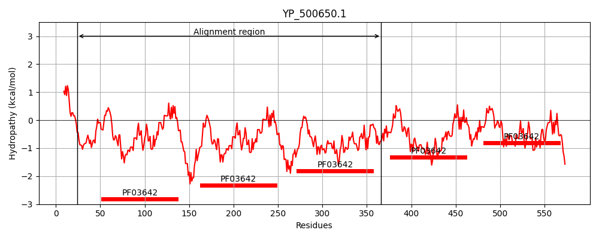
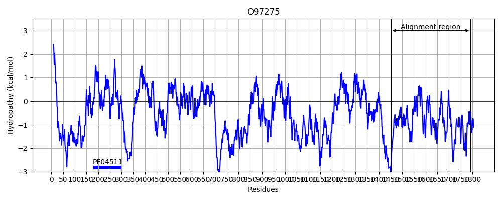
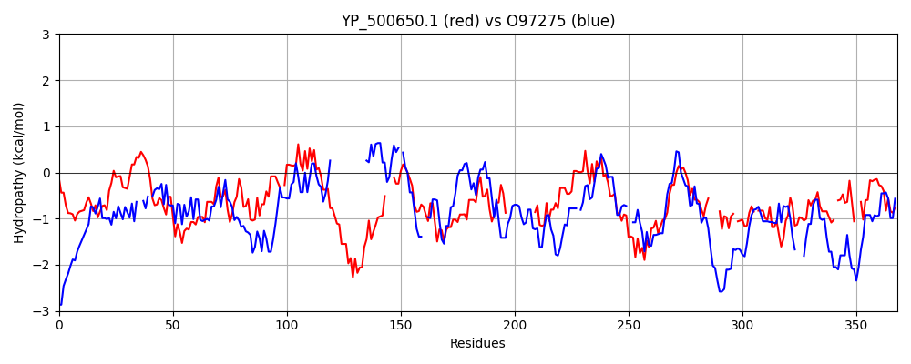

Hit Accession: O97275
Hit TCID: 3.A.25.2.1
Hit Description: gnl|BL_ORD_ID|7811 gnl|TC-DB|O97275|3.A.25.2.1 DER1-like protein, putative OS=Plasmodium falciparum (isolate 3D7) GN=PFC0590c PE=4 SV=3
Mach Len: 368
e:0.000007
Query TMS Count : 0
Hit TMS Count: 0
TMS-Overlap Score: 0.000000
Predicted Substrates:CHEBI:16670;peptide
BLAST Alignment:
Score: 115 , Bit scores: 48 bits, E-value: 6.7e-06, Alignment length: 368, Percentage identity: 25
Query: 24 NNNEASAAAKPLDKSSSSLHHGYSKVHVPYAITVNGTSQNILSSLTFNKNQNISYKDLEDRVKSVLKSDRGISDIDLRLSKQAKYTVYFKNGTKKVID-LKAGIYTADLINTSEIKAININVDTKKQVEDKKKDKANYQVPYTI---TVNGTSQNILSNLTFNKNQNISYKDLEDKVKSVLESNRGITDVDLRLSKQ------------AKYTVNFKNGTKKVIDLKSGIYTANLINSSDIKSININVDTKKHIENKAKRNYQVPYSINLNGTSTNILSNLSFSNK----PWTNYKN-LTSQIKSV-LKHDRGISEQDLKYAKKAYYTVYFKNGGKRILQL-NSKNYTAN--LVHAKDVKRIEITVKT 366
NNN + SSSS ++ Y +N QN L + NK ++ISYK +D++K + ++ K Y +F + + V D + ++ N K INI NY P I T+N +NIL N+ NK+ + DK K ++ D L+K + Y+ + K KK+++ K LI I I+ DT +++NK ++ + Y IN + IL L K P + +N T QIK++ +K+ + Q+ K KK ++FKN +I+ L + +N+ N + + KD + I KT
Sbjct: 1452 NNNNNHYDKVDVSSSSSSSYYYYLNKSGKNLGNIN--VQN-LDDININKIKSISYKIKKDQIKDIGYMRVSKYSELMKSMKMMNYDEHFNDEYRNVCDEIYEDLFLIYNKNIQVYKNINI---------------CNYTFPMAINLLTLN-NDENILINI--NKSDDNKKLIKVDKKKFLIVDILYNYDYYYTLTKSKLDKLKEYNIYLSYYSNHIKKKNKKILNYKK-YALLKLIKKRGFNYICIDADT--YVKNKKGKSKDLSYEINKLYINNLILDILKRQKKNHLHPHPHTQNRTTKQIKNINIKNKLLLYHQNKKNVKK---IIHFKNYKYKIMNLPDQRNHYHNKRIKYIKDKSLLAINHKT 1792 | Protein Hydropathy Plots: |
|---|
|  |  |
Pairwise Alignment-Hydropathy Plot:
|
|---|
|  |